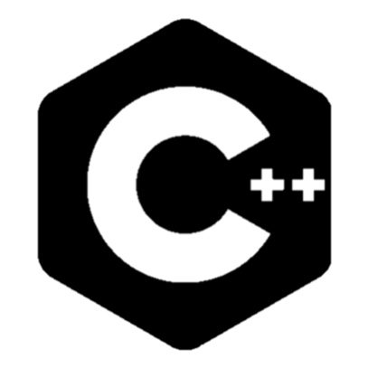
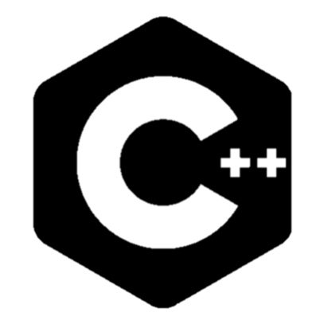
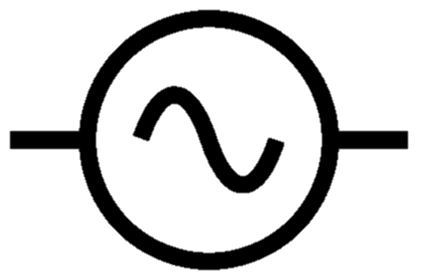
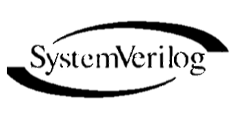
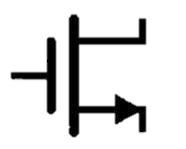

Alex Eidt
About
I'm an undergraduate student studying Electrical Engineering at the University of Washington. My concentration is Embedded Computing Systems with some Digital Signal Processing.
Timeline
Coursework
- CSE 163: Intermediate Data Programming
- CSE 351: The Hardware Software Interface
- CSE 373: Data Structures and Algorithms
-
CSE 374: Programming Concepts and Tools
 

-
CSE 391: System and Software Tools


- CSE 455: Computer Vision
-
EE 233: Circuit Theory


- EE 235: Continuous Time Linear Systems
- EE 271: Digital Circuits and Systems 
- EE 331: Devices and Circuits I 
- EE 341: Discrete Time Linear Systems
- EE 371: Design of Digital Circuits and Systems
- EE 418: Network Security and Cryptography
- EE 419: Computer Networks
- EE 474: Embedded Computing Systems
Projects
A Seam Carving Algorithm to resize images vertically and horizontally without distorting the objects within the image.
Convert Video and Images to ASCII Form in Color or Monochrome.
Mosaiic
Creates animated image mosaics with colored ASCII.
ASCII Vision
Convert video/webcam streams into high resolution ASCII streams with other optional video effects.
I also created a tutorial on processing webcam streams with C and displaying them on a window in Python.
Find it on GitHub!

Bubblio
Creates animated scatterplot-style letters and words in different shapes and sizes.
Side-Scroller
For my EE 371 final project, my partner and I implemented a side-scroller game on a FPGA on an Altera DE1 SoC board.
Game of Life Simulator
Conway's Game of Life Simulator with PNG and GIF capture/recording.
Word Separator
Use of Natural Language Processing concepts to build a word tokenizer from scratch.
Creates acyclyic directed graphs of any directory of your choosing!
UIL/UW Solar Websites
I created and designed the new website for UW Solar and its parent lab, the Urban Infrastructure Lab (UIL) along with a fellow Computer Science undergraduate. Our goal was to make the site simple and robust so future students could edit and understand it easily. To help with this, I created documentation for editing the UW Solar site.
Word Search Generator
A Word Search Generator using the tKinter UI framework that allows the user to create randomized and customized word search puzzles. The board can be reshuffled with existing or new words and solutions can be shown.
Frogger
Frogger is an old classic where the player needs to avoid oncoming traffic to safely cross the road. I chose to implement this game on a FPGA on an Altera DE1 SoC Board for my EE 271 final project.
uwtools is an API to access course and time schedule data for courses at the University of Washington. I built this library to support the UW Course Planner project.
UW Course Planner
The UW Course Planner is a Web App with geospatial schedule visualization on a campus map, recursive course prerequisite tree generation and course keyword search for courses offered at UW.
Basketball Statistics Tracking
To keep track of player statistics for my Intramural Basketball Team, I built an application using Java Swing to create an intuitive UI for creating teams and adding statistics.
Interests
The design of this website was inspired by sub.mersion.cc.
© Alex Eidt